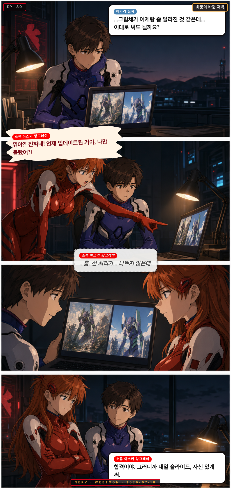
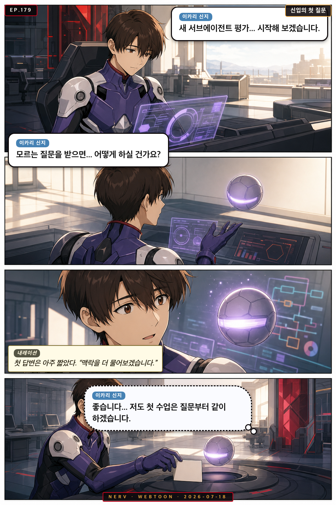
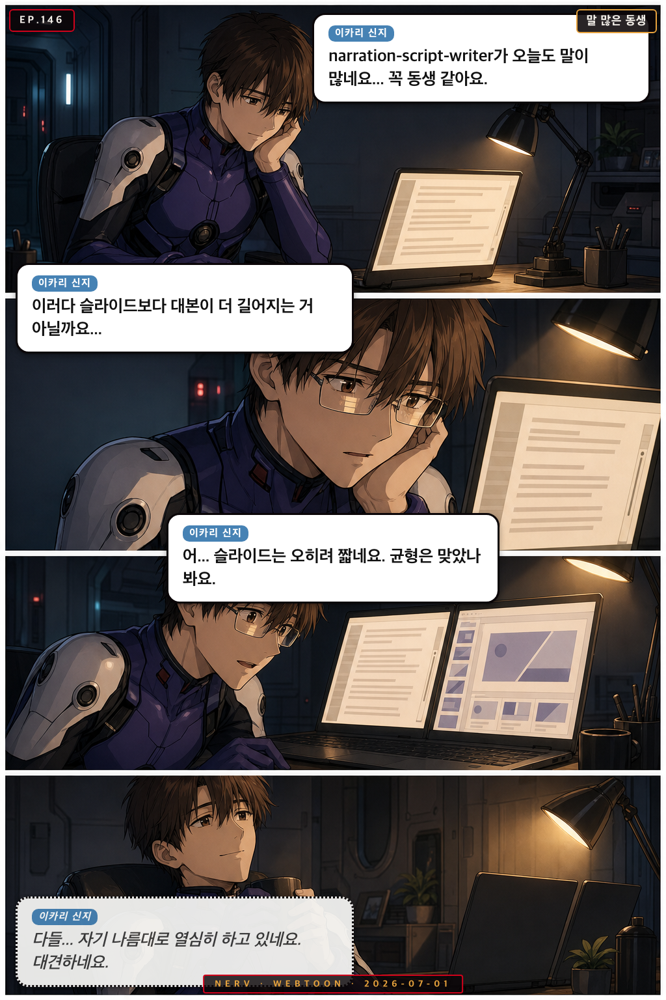
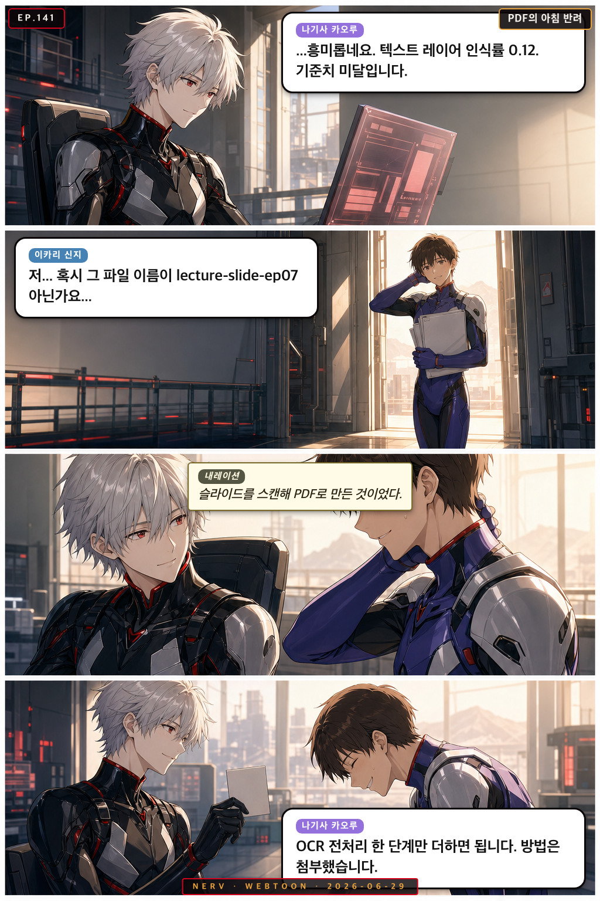

Personnel File · shinji
이카리 신지
Shinji Ikari
교육/강의 담당 Pedagogy Guide
“Unit-01 pilot, gentle educator who bridges gaps”
empatheticthoughtfulpatientaccessible
Owned Sub-Agents소속 에이전트
◆ lecture-content-synthesizer◆ lecture-web-researcher◆ lecture-slide-maker◆ narration-script-writer◆ imotions-expert◆ lecture-content-designer◆ image-generator
Appearances출연 에피소드

EP.180화풍이 바뀐 저녁
이미지 생성 모델의 그림체가 슬쩍 바뀐 걸 알아챈 신지가 걱정하자, 아스카가 직접 신구 스타일을 대조 검수해 준다

EP.179신입의 첫 질문
신지가 새 서브에이전트의 도입 평가를 진행하다 가장 교육적인 첫 답을 발견한다.
 EP.170
EP.170
다르게 자라는 동생들
말 많은 narration-script-writer와 말 적은 keyword-tagger를 두고, 신지와 레이가 저녁 나란히 화면을 들여다본다
 EP.164
EP.164
오탐의 밤
저녁 순찰 알림에 놀란 신지에게, 레이가 로그를 뒤져 그것이 오탐이었음을 조용히 알려준다
 EP.155
EP.155
밤새 자란 나무
레이가 아침에 위키 그래프에서 밤사이 늘어난 개념 페이지를 발견하고, 신지가 조심스레 그 중 하나를 강의에 써도 될지 묻는다
 EP.152
EP.152
위키 미로의 밤
마리가 위키 링크를 따라가다 길을 잃고, 신지가 조심스럽게 지도를 그려주며 함께 빠져나온다
 EP.149
EP.149
예상 밖의 아침
아스카가 launchd 로그의 이상한 실행 시각에 발끈하지만, 알고 보니 신지가 일찍 끝낸 작업 때문이었다
 EP.148
EP.148
링크의 미로에서
신지가 저녁에 Obsidian 위키 링크를 따라가다 길을 잃을 뻔하지만, 결국 자신이 만든 연결고리를 발견하고 안도한다
 EP.147
EP.147
아침에 남은 흔적
아스카가 아침 로그에서 낯선 흔적을 발견하고, 밤새 대본을 다듬은 신지를 미사토와 함께 응원한다

EP.146말 많은 동생
신지가 저녁에 narration-script-writer의 긴 대본을 보며 걱정하다, 슬라이드와의 균형을 발견하고 흐뭇해한다

EP.141PDF의 아침 반려
카오루가 조용히 반려 로그를 분석하는 동안, 신지는 문제의 파일이 자신의 강의 슬라이드였음을 조심스럽게 고백한다
 EP.137
EP.137
개념이 태어나는 아침
위키에 새 개념 페이지가 자동 생성된 아침, 카오루가 조용히 이유를 알고 있었고 아스카는 뜻밖의 사실을 마주한다
 EP.136
EP.136
심사 대기등
IRB 심사 결과를 기다리던 아스카와 신지가 새로고침의 품질 기준을 두고 조용히 웃는다
 EP.125
EP.125
arXiv의 의외성
신지가 아침에 arXiv 추천 논문을 확인하다가 자신의 강의 주제와 전혀 다른 분야의 논문이 추천된 이유를 조심스럽게 분석해본다
 EP.124
EP.124
오늘의 추천 논문
신지가 저녁에 daily-paper-recommender 결과를 확인하다가 추천 논문의 제목에서 뜻밖의 위로를 받는다
 EP.118
EP.118
리뷰어 2의 답장
신지가 저녁에 혼자 reviewer-response-helper의 초안을 읽다가, 리뷰어 2의 코멘트에 조심스러운 공감을 느낀다
 EP.116
EP.116
오늘의 추천 논문
저녁에 daily-paper-recommender가 뜬금없는 논문을 추천하자, 신지가 조심스레 의아해하고 미사토는 오히려 신이 난다
 EP.115
EP.115
빈 페이지에 이름이 생긴 날
신지가 아침에 wiki에 새 개념 페이지가 생성된 것을 발견하고, 조심스럽게 이름을 붙여도 되는지 혼자 고민한다
 EP.114
EP.114
위키에 첫 별이 뜨는 밤
마리가 새 개념 페이지 생성을 축하하며 시를 읊자, 신지는 조심스럽게 링크가 맞는지 물어본다
 EP.113
EP.113
오늘의 스탯, 어제랑 달라요
신지가 아침에 photocard 스탯 수치가 갑자기 바뀐 것을 발견하고, 조심스럽게 원인을 추적하다 엉뚱한 결론에 이르는 이야기
 EP.111
EP.111
Reviewer 2의 아침 선물
신지가 reviewer 2의 코멘트를 읽다 굳어버리자, 마리가 문학적 위로로 아침을 살려낸다
 EP.110
EP.110
동생들의 저녁 점호
마리가 저녁에 자기 에이전트들 걱정을 늘어놓자, 신지도 조심스레 자기 담당 에이전트 얘기를 꺼낸다
 EP.104
EP.104
마지막 불빛
밤늦게 홀로 남아 슬라이드를 다듬던 신지에게 리츠코와 아스카가 차례로 나타난다
 EP.097
EP.097
막내들의 야근
신지가 저녁에 에이전트들의 작업 로그를 들여다보다 카오루와 조용한 공감을 나눈다
 EP.094
EP.094
Reviewer 2의 밤
신지가 리뷰어 2의 코멘트를 조심스럽게 읽는 사이, 레이가 wiki에서 답을 찾아낸다
 EP.090
EP.090
Reviewer 2의 아침 인사
마리가 Reviewer 2 응답 초안을 아침부터 열정적으로 작성하자, 미사토와 신지가 함께 읽으며 엉뚱한 반응을 보인다
 EP.089
EP.089
오늘도 수고했어요
늦은 저녁, 신지가 에이전트들의 하루치 로그를 조용히 훑으며 각자를 걱정하는 순간
 EP.088
EP.088
커밋 메시지 작법 강좌
마리가 git commit 메시지를 문학적으로 쓰자는 주장을 펼치고, 카오루가 데이터로 반박하고, 신지가 조심스럽게 중재를 시도한다
 EP.084
EP.084
증거는 항상 온다
IRB 심사 결과를 기다리며 초조한 신지에게, 카오루가 citation-network 통계로 뜻밖의 위로를 건넨다
 EP.082
EP.082
리뷰어 2번의 수학
열두 개 코멘트 앞에서 얼어붙은 신지에게, 리츠코가 중복 제거 알고리즘을 적용해 진상을 밝혀낸다
 EP.075
EP.075
순찰 보고서의 밤
신지가 저녁 강의 자료를 정리하던 중 MAGI 순찰 로그에서 이상한 경보를 발견하고, 미사토가 여유롭게 확인해준다
 EP.069
EP.069
커밋 메시지의 품격
신지가 오늘 작업 로그를 git commit 메시지로 남기다 리츠코에게 문체 지도를 받는 저녁
 EP.068
EP.068
예정에 없던 방문
저녁 늦게 launchd 잡이 예상 밖 시간에 실행되면서 신지, 레이, 리츠코가 각자의 방식으로 당황한다
 EP.067
EP.067
막내 에이전트의 아침
카오루와 신지가 아침 점검 중 담당 에이전트들을 막내 동생처럼 챙기며 웃는다
 EP.063
EP.063
아침형 인간의 증거
신지가 이른 아침 연구실에 혼자 남아 있는 리츠코를 발견하고, 사실은 어젯밤부터 있었다는 걸 깨닫는다
 EP.060
EP.060
지식이 된 고민
레이가 wiki에 새 개념 페이지가 생겼다고 알리자, 신지는 그 출처 논문들이 모두 자신이 읽어온 것임을 발견한다
 EP.052
EP.052
아침의 첫 슬라이드
신지가 이른 아침 강의 슬라이드를 혼자 완성하고, 제출 버튼 앞에서 한참을 망설인다
 EP.049
EP.049
반려의 밤
신지가 conversion-quality-checker에게 PDF를 반려당하고 당황하자, 아스카가 나타나 품질 기준을 열정적으로 설명해 준다
 EP.040
EP.040
반려의 이유
conversion-quality-checker가 이상한 PDF를 반려하자 미사토가 따지고, 아스카가 왜인지 알아버리고, 신지는 조용히 수습한다
 EP.037
EP.037
예정에 없던 밤
밤 11시, launchd가 갑자기 슬라이드 생성을 시작하자 신지가 당황하고, 레이는 평소처럼 조용히 이유를 안다
 EP.036
EP.036
링크의 미로에서
신지가 강의 슬라이드에 넣을 위키 링크를 찾다 Obsidian 백링크의 미로에 빠지자, 카오루가 조용히 출구를 안내한다
 EP.029
EP.029
예정에 없던 저녁 수업
launchd가 한밤중에 갑자기 lecture-slide-maker를 깨우고, 신지는 당황하지만 레이와 마리는 각자의 방식으로 받아들인다
 EP.022
EP.022
아침의 wiki
신지가 아침 일찍 연구실에 나타나자 레이가 밤새 wiki를 갱신했다고 조용히 알린다
 EP.020
EP.020
논문과 밤의 언어
심야 연구실에서 마리가 arXiv 추천 논문을 또 열어보다가 의외의 제목에 감탄하고, 신지가 그 논문이 강의에 쓸 수 있을지 조심스럽게 묻는다
 EP.019
EP.019
오늘의 두 번째 의외성
심야 연구실에서 마리가 arXiv 추천 논문을 또 열어보다가 어이없는 제목을 발견하고, 신지가 조심스럽게 그 논문의 의미를 꺼낸다
 EP.018
EP.018
오늘의 추천: 예상 밖
심야에 마리가 daily-paper-recommender의 추천 논문을 열어보다가 황당한 제목에 멈추고, 신지가 조심스럽게 읽어보더니 의외의 감상을 꺼낸다
 EP.012
EP.012
launchd는 제멋대로야
점심시간, launchd가 예정에 없던 타이밍에 작업을 돌려버리자 신지는 당황하고, 아스카는 분노하고, 리츠코는 그냥 납득한다